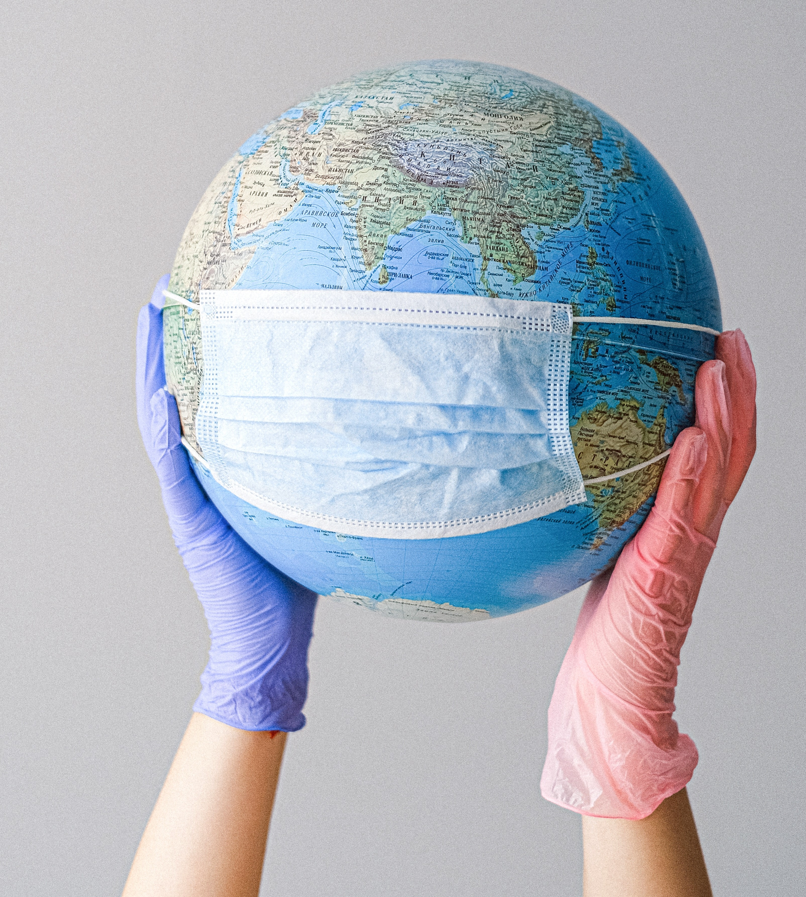

Since containment started a month ago, in April, I wanted to write how impressed I am for living in a historic situation like we are today for the sanitary contingency. Among procrastination, Netflix, family, personal projects, and college, I had forgotten what represents for me and shared what this situation let me to learn -and for you, for sure- things that we hadn’t noticed if the containment would ever happen.
We didn’t have an option, at least not before the “new normality”. This situation has been hard for everyone, above all because the best way to help is staying in our houses to avoid the virus propagation and thus decrease the probability of hospitals saturation in where the heroes of today, health personal, work hard every day saving lives and risk theirs.
The pandemic allows us to appreciate the value of our freedom and has taught us that we need social contact more than material things. Nobody misses more than the memories, hanging out with friends, the face-to-face experience, going out from our home, at least do it without a face mask. The containment has allowed us to retake the activities that we couldn’t do for lake of time, and it has given to us the opportunity to join with our family, to find space in the speed that our past lives not give it to us: time to reflection, cultivate ourselves and appreciate the details.
Is like life is giving to us –through a pandemic- a sign that we must change our habits and learn to appreciate the things that there were simple for us before. It reminds me a lot the Passenger’s song: “you only need the light when it’s burning low, only miss the sun when it starts to snow” … only know you love the things when you let it go”. That’s what happened to us.
Thanks to a conversation with a professor that I appreciate a lot, I remember a great book that I have read the last year “Man's Search for Meaning” by Viktor Frankl (without a doubt if you haven’t read the book before I recommend to you a lot, I’ll put the link bellow so you can search for it). It is a book that makes you reflect -like its name says- the questions about what the life sense is, through the author’s experience -who was a psychiatrist- in the nazi concentration camps, where he perceived what the motives were, hopes and illusions of the people in there to tolerate suffering of such magnitude. He survived y because of him we have knowledge of logotherapy theory and human existence about the sense will is the primary motivation of the human being.
When I was talking with my professor, it made a lot of sense for us to relate the content with what we are living nowadays. It is incomparable the experience of being without your freedom in a concentration camp in that cruel period, but if we use it like an analogy, we also lost our freedom being contained in our house, and our emotions have been like a roller coaster. Frankl taught us in his book that “Every person, even in the more tragic conditions, keep the interior freedom of chose who wants to be – spiritually and mentally -, because even in that circumstances is able to keep the dignity of keep feeling like a human being”. And that “On multiple occasions, it is the exceptionally adverse or difficult circumstances that give man (people) the opportunity to grow spiritually beyond him and herself".
I want to complement this with the information that I heard from a webinar by the physiotherapist Desiree Carlson about the uncertainly as the first of the many adversities we pass throughout our lives and is our shape to reply to what determine the way in how we enforce our challenges. Without doubt, I’m aware that this is a hard situation for all but is something external to us that we can’t keep under our control. What we can do is being aware and learn in the process, our attitude in these situations of crisis determine a lot our way to act and react.
Back to Viktor Frankl, he shows that the experiences of the prisoners in the concentration camps keep their able to choose, because “To man (people) can be deprived of everything except one thing: the last of human freedoms, the choice of the personal attitude to adopt in the face of destiny to decide his own path”.
Linking this analogy from Viktor Frankl's book with this time of contingency and uncertainty, let us remember the many possibilities that can give meaning to our lives, it is normal to experience a myriad of emotions, but let us not let ourselves be discouraged, but keep hope and learn to reflect. The pandemic may keep us from leaving home, from seeing our loved ones and friends, but it can never take away our attitude towards life and the way we feel, from learning for ourselves and from continuing to help others.
As same as many, I feel a lot of impotence watch how hard it is to face the pandemic in Mexico when the mobility restrictions made people lose their jobs, decrease the sales in their business, that children and young people abandon their education for lack of technological tools or perceive how exhausting the day-to-day life is amidst so much bombardment of bad news. As the philosopher Edgar Morin says, the “I stay at home” means not only to protect ourselves but also to protect everybody that conforms to our community and doesn’t have the same privileges that us. In this time, we need to think not only about what we want to do, but also about what we want to become to help others.
Desiree Carlson mentioned that there are five ways of how people face adversity: 1) Avoid it, 2) Surviving it, 3) Cope with it, these three ways are found in 70% of people. Nevertheless, we can also 3) Handle it, or 5) Take advantage of it. This new normality has taught us to adopt new hygienic habits, take care of the environment, take advantage of technological tools, and the importance and care of our old people. So, we should learn to live with the measures. But after that, BECAUSE WE WILL GO OUT, when we talk about 2020 as a memory, what we want to say when someone ask us ¿How we faced it? ¿What we did? ¿What attitude we had?
Someday I read about the fact that something is in the certain way doesn’t determine that it will always be the same. Be aware of how we feel it helps us to stop, to keep going, to ask us what things we do right and what others we need to improve. It sounds simple but helps us to bring out the best in ourselves, it allows us to see the way we want to achieve our goals. So, I’m convinced that even in times of crisis is when we bring out the best of ourselves, when we are more creative and resilient to keep going. Please do not adapt to the situation, is how we are saying “there’s no other way”, instead, adopt it awareness and make it part of us.
“It doesn't really matter what we expect from life, but what life expects from us” Viktor E. Frankl
Love,
Verónica G. Márquez
Acknowledgments:
Professor Claudia Pérez Villarreal, por hearing me and helping me. My mom and dad, my sisters Clau and Mich, for being my unconditional support. To my friends: Angela, Andy, Josue y Omar, for be with me even the distance.
References:
o Ordine, N. (april 11th, 2020) Edgar Morin: “We live in a planetary market that has failed to create fraternity among peoples.”. . En El País. https://elpais.com/cultura/2020-04-11/edgar-morin
o EGADE Business School (mayo 6th, 2020) Webinar #15. Transiting Uncertainty: Life after COVID-19. [Video]. https://www.youtube.com/watch?v=VZ7CcV3HLK0
o Frankl, V. (1946). Man's Search for Meaning.